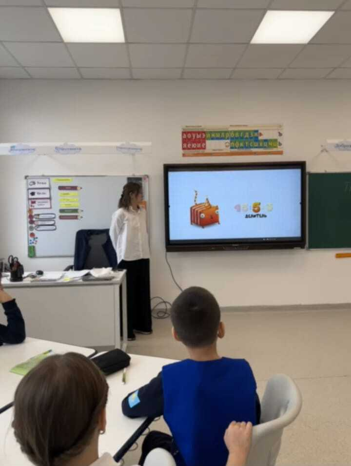

Высший педагогический колледж
Международного университета Астана
Приемы обучения младших школьников табличному умножению и делению
Специальность: 01140100 «Педагогика и методика»
Квалификация: Учитель начального образования
Студент: Бакуева Арулана Бауржанкызы
Руководитель: Дүйсенбекова Ж. Б.
Астана, 2026
Введение
Обучение математике в начальной школе — важнейший этап формирования базовых учебных навыков учащихся.
Ключевым компонентом математической подготовки выступает прочное усвоение табличного умножения и деления.
Основная проблема:
Процесс обучения часто сводится к механическому заучиванию. Это снижает интерес к предмету и не обеспечивает осознанного усвоения материала.
Методологический аппарат
Актуальность
В современной начальной школе сохраняется проблема недостаточной сформированности прочных навыков табличных вычислений.
Цель
Изучить и научно обосновать наиболее эффективные приемы обучения младших школьников табличному умножению и делению.
Гипотеза
Эффективность усвоения материала напрямую зависит от применения разнообразных и методически обоснованных приемов обучения.
База исследования
Объект и Предмет
Объект: Процесс обучения математике в условиях начальной школы.
Предмет: Конкретные приемы и методы формирования навыков у школьников.
Методы исследования
- Анализ литературы.
- Сравнительный анализ методик.
- Наблюдение за учебной деятельностью.

Задачи исследования
-
Изучить особенности возраста: Проанализировать психолого-педагогические особенности младших школьников, влияющие на восприятие математической информации.
-
Раскрыть сущность: Определить фундаментальное значение табличного умножения и деления в структуре начального курса математики.
-
Проанализировать методики: Дать критическую оценку существующим подходам и методикам обучения табличным вычислениям, выделив их сильные и слабые стороны.
Особенности возраста
Наглядно-образное мышление
Младший школьный возраст (6-10 лет) — критически важный этап формирования основ учебной деятельности.
Мышление детей в этот период носит преимущественно наглядно-образный характер. Это означает, что абстрактные математические понятия требуют мощной визуализации.
Традиционная методика, основанная лишь на многократном повторении, не учитывает эту особенность, что приводит к быстрому снижению мотивации.

Эффективные приемы обучения
Осмысленное запоминание
Отказ от "зубрежки" в пользу понимания структуры таблицы и самостоятельного выявления математических закономерностей.
Игровые технологии
Внедрение математических игр, соревнований и активных физминуток с практическим использованием знаний для повышения мотивации.
Обратные действия
Активное использование деления для прочного закрепления умножения через осознание связи «произведение — множители».
Дифференцированный подход
Работа в парах (взаимопроверка), адаптация заданий: базовые для слабых учеников, усложненные для сильных.
Практическая реализация на уроках
.jpeg)
Игровые технологии
Использование интерактивной игры «Математическое перетягивание каната» у доски стимулирует соревновательный дух и скорость вычислений.
.jpeg)
Дифференцированный подход
Организация работы в мини-группах под контролем педагога. Сильные ученики объясняют материал слабым (взаимопроверка).
Ход практического исследования
В исследовании приняли участие 25 учащихся 4 «О» класса.
1. Констатирующий
Первичная диагностика исходного уровня знаний умножения и деления.
2. Формирующий
Активное внедрение в образовательный процесс комплекса новых приемов.
3. Контрольный
Финальная оценка эффективности примененных приемов и динамики.
Критерии оценивания знаний
Высокий уровень
Быстро и безошибочно выполняет вычисления, четко понимает взаимосвязь действий и легко применяет знания в текстовых задачах.
Средний уровень
Допускает незначительные ошибки. Выполняет задания с опорой на подсказки учителя, испытывает некоторые трудности при решении задач.
Низкий уровень
Практически не знает таблицу. Допускает систематические ошибки, не понимает смысловую связь между математическими действиями.
Сравнительный анализ результатов
Сравнение показателей до (констатирующий этап) и после (контрольный этап) внедрения инновационных приемов обучения.
| Уровень знаний | До эксперимента (Диагностика 1) | После эксперимента (Итог) | Динамика |
|---|---|---|---|
| Высокий уровень |
0% (5 учеников)
|
0% (6 учеников)
|
+0% |
| Средний уровень |
0% (13 учеников)
|
0% (14 учеников)
|
+0% |
| Низкий уровень |
0% (7 учеников)
|
0% (5 учеников)
|
-0% |
Ключевой результат: снижение числа учеников с низким уровнем знаний (с 28% до 20%) и их переход в другие группы.
Заключение
Проведённая работа полностью подтверждает целесообразность внедрения современных педагогических технологий и разнообразных методических приёмов.
Это способствует значительному повышению качества образования и успешности обучающихся начальных классов.
Спасибо за внимание!
Готова ответить на ваши вопросы.